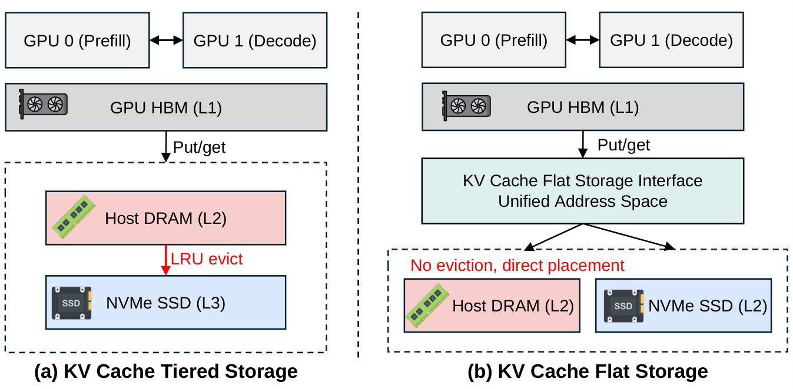
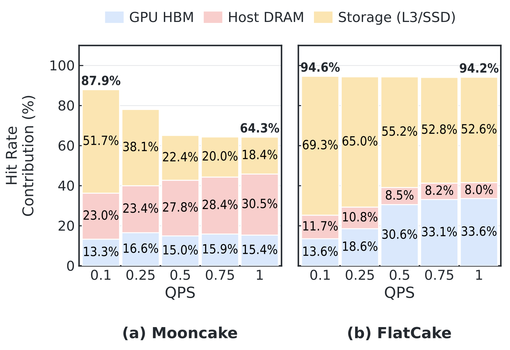

Contents · 8 sections
1What problem is it actually solving?2The overall idea: blocks are written once, so their home can be decided at write time3FC-GVA: deciding a block's home when it is created4FC-MAS and FC-CIO: fast SSD reads that do not slow memory hits5Results: is it really better?6Limitations as I see them7How an inference serving team could try it8VerdictSHARE
After analyzing eight production LLM request traces, the authors find that the common practice of treating host memory as a KV cache layer in front of the SSD barely filters any reads under these workloads. Reused blocks either come back only after a long gap, or belong to agent sessions of several gigabytes each that memory cannot hold, so the SSD always ends up on the read path. FlatCake puts memory and SSD at the same level and decides each block's home when it is created. Shared system prompts and short-reply chats go to memory, while multi-gigabyte agent sessions are written straight to the SSD. A session's blocks are stored contiguously and never move, and reads stream large chunks from the SSD straight into the GPU. Replaying a production Claude Code trace, the share of prefixes it reads back instead of recomputing holds at 94% as load rises, while Mooncake drops to 64%. KV storage for long agent sessions should be planned per session.
What problem is it actually solving?
Prefix caching is standard in inference serving. GPU memory cannot hold that much KV, so Mooncake, LMCache and SGLang HiCache push it outward and organize it as a classic tiered cache: new blocks enter host memory first, when memory fills up LRU pushes cold blocks to the SSD, and an SSD block that is needed again travels back to the GPU through memory.
This rests on two premises. First, memory can keep the frequently used blocks, so the SSD only handles occasional cold reads. Second, although eviction order scatters blocks across the SSD, staging them through memory puts them back together. The authors argue that both premises fail at once for LLM workloads. Consider an illustrative scenario: one machine serves 20 coding-agent sessions at the same time, each with several GB of history KV.
| One read (illustrative) | What tiered storage does | Result |
|---|---|---|
| Session A, turn 30, needs the KV of the first 29 turns | those blocks were pushed out of memory by other sessions long ago and lie scattered across the SSD | thousands of small reads, first into memory buffers, then to the GPU |
| 10 sessions reading back at once | each needs its own staging buffer in memory | buffers run out, some prefetches are cancelled, and prefill has to be recomputed |
The real data makes the point more strongly. In the seven chat and API traces, 53% to 94% of blocks are accessed only once, and reusable prefixes are hundreds to thousands of requests apart, so one-shot blocks keep flushing useful prefixes out of memory. The Claude Code trace is the opposite: 83.4% of blocks are reused, but an average request carries about 219K tokens of history, about 0.8 GiB on a single GPU, and a few concurrent sessions exceed memory. Both cases end the same way: most hits can only be served from the SSD.
The overall idea: blocks are written once, so their home can be decided at write time
The authors' key observation is that KV blocks differ from ordinary memory pages: once written they never change, and they are always reused as a whole session. The next turn reads back all layers of that session's earlier KV together. Since blocks are never modified, there is no dirty data to write back; since we know which session a block belongs to and how it will be read, the best layout on the SSD is already known when it is written.

FlatCake has three components, each owning one stage of a request's life:
| Component | Stage | What it does |
|---|---|---|
| FC-GVA | writing and addressing | decides memory or SSD when a block is created and encodes that location in a 64-bit address that never changes |
| FC-MAS | scheduling | queues requests whose blocks are all in memory separately from requests that need SSD reads |
| FC-CIO | SSD reads and writes | writes contiguously per session and per layer; on reads, merges into large chunks and reads straight into the GPU |
The sections below take them apart.
FC-GVA: deciding a block's home when it is created
Tiered storage never has to decide a block's long-term home at write time: everything enters memory and LRU sorts it out. Once FlatCake removes migration, it must decide once, at write time. It uses signals the engine already has at that point. System prompts shared by several requests (a prompt's KV is stored once, and it counts as shared when its reference count in the engine's prefix tree, the number of requests currently referencing that prefix, is above 1) and multi-turn chats whose previous reply was short are small and reused soon, so they go to memory. How short counts as short, and how long counts as long, are each set by a tunable threshold. On the other side, sessions whose context exceeds the agent threshold or whose previous reply was long, the first turn of any session, and any write that arrives when memory is full go straight to the SSD. The turn number, the existing context length and the previous reply's length are all known before this turn starts generating.
Why dare to put possibly reusable blocks on the SSD? Because in this design a wrong placement has an asymmetric cost. Sessions on the SSD are stored contiguously, so reading one back only runs at SSD bandwidth instead of memory bandwidth; it causes no cache miss and no shuffling of blocks between tiers.
Because a block's location never changes, it can be baked into its address, so no lookup table of moves is needed. Each block gets a 64-bit address: the top 4 bits say the medium (0 for memory, 1 for SSD), the next 12 bits are the node number, and the last 48 bits are the byte offset. A lookup goes through a hash table in memory that maps a block's key to its address in one step, and the medium bits pick the transport: cudaMemcpyAsync for local memory, GPUDirect Storage (GDS) for the local SSD, and RDMA and NVMe-oF for remote ones.
Reclaiming SSD space also works per session. Blocks never change, so reclaiming needs no write-back; when SSD usage crosses a high watermark, the oldest session that nobody is currently reading is reclaimed as a whole. Compare Mooncake, which allocates SSD space in fixed-size buckets and recycles them first-in first-out: a bucket mixes blocks from several sessions, so recycling one bucket can cut a piece out of several active sessions' prefixes, which then have to be recomputed.
FC-MAS and FC-CIO: fast SSD reads that do not slow memory hits
Without staging through memory, the bandwidth gap between memory and SSD (about 5 times in the paper's measurements) hits the scheduler directly. If all requests share one first-come first-served queue, a request reading several GB from the SSD blocks the requests behind it that only need a little data from memory. FC-MAS keeps two queues: requests whose blocks are all in memory go to the ready queue and run at once. If even one block is on the SSD, the request goes to the SSD-preparing queue, and all the history KV it needs is prefetched into GPU memory in the background. Only when that read is done does it enter the ready queue and start prefill.
Inside the SSD queue the order follows this priority:
It is the waiting time divided by the amount of KV to read. Illustrative: a 1 GB request and a 4 GB request that have both waited 2 seconds get priorities 3 and 1.5, so the small one is read first; but the large request's priority keeps rising as it waits, so it is never starved. When a prefetched request goes back into the ready queue, it is placed by its original arrival time rather than at the tail, because its time in the SSD queue counts too. Hoot says

This paper's contribution is reading KV straight from SSD into GPU memory with no host-memory staging. Priority in the SSD queue is 1 + wait time ÷ KV size to read. Illustrative: a 4 GB request that has waited 10 s scores 1 + 10/4 = 3.5, while a new 1 GB request that has waited 2 s scores 3, so the large one reads first. Drag the slider to compare the two lines. Source: illustrative example of the paper's §4 FC-MAS priority formula
FC-CIO makes SSD reads fast. Prefill runs layer by layer, and layer l needs the KV of all of the session's history tokens at layer l. So at write time each session gets one pre-allocated contiguous file, each turn's blocks are laid out by layer so that, within that turn, all blocks of layer l occupy one contiguous range, and later turns append their own layer-ordered segments after it. So restoring layer l's history means reading a few large contiguous segments, one per turn, rather than thousands of scattered small blocks. At read time, the blocks to read are sorted by (file, offset), adjacent ones are merged into one large read, and gaps smaller than 64 KiB are read along with them, trading a few extra bytes for fewer read commands. In the ideal case the paper gives, this cuts the number of read commands from "layers times blocks" to the order of "layers"; that is the case where a session's history was written in one batch, so each layer is exactly one segment. After several appended turns each layer is one segment per turn, so reads are roughly layers times turns, still far fewer than blocks.
The data never passes through host memory: GDS reads it straight into a small double-buffered window on the GPU, only two layers in size per stream, and from there it is scattered into the paged KV slots. The two layer buffers are reused in turn, so the staging space on the GPU stays at two layers. When the window is full, a new prefetch simply waits, instead of being cancelled and recomputed as happens in tiered storage when staging buffers run out.
Results: is it really better?
The main experiment runs DeepSeek-V4-Flash on 8 B200 GPUs and replays the Claude Code production trace, raising the rate from 0.1 to 1.0 requests per second to see who breaks first as load rises. To keep it fair, every system gets the same memory and SSD budget. The baselines are SGLang HiCache with only GPU memory plus host memory, and Mooncake with GPU memory, host memory and SSD. The "hit rate delivered to the GPU" in the table counts blocks, and only reused blocks actually moved into GPU memory before prefill starts; blocks that are stored but not read back in time do not count. It is the same metric as the "share of prefixes read back instead of recomputed" in the opening.
| At 1.0 requests per second | Memory-only two tiers | Mooncake | FlatCake |
|---|---|---|---|
| Mean time to first token | 17.51 s | 12.24 s | 7.57 s |
| Median time to first token | 18.39 s | 11.45 s | 6.26 s |
| Total throughput (tokens/s) | 43.2K | 61.6K | 98.3K |
| Hit rate delivered to the GPU | 53.30% | 64.26% | 94.16% |
The hit-rate row is the key one. At most 94.72% of this trace's prefixes can be reused in theory, and FlatCake stays within 0.6 percentage points of that at every load; Mooncake still has 87.9% at low load but falls to 64.26% from 0.5 requests per second up, only 11 points above memory-only, which means most of its 4 TiB of SSD goes unused. The authors trace this to memory staging buffers being filled by concurrent long-session restores, so prefetches are cancelled and prefill is recomputed. This shows that the gaps in time to first token and throughput mostly come from KV that was stored but never read back.

Next, what each component contributes. FC-CIO gives each worker about 5 GB/s of SSD read bandwidth, 1.9 times Mooncake's; as load grows tenfold, FlatCake's SSD prefetch time stays at 1.47 to 1.75 seconds while Mooncake's climbs from 3.16 to 9.50 seconds, which shows that merged large reads do not queue up under high concurrency. Mooncake's SSD read amplification is 6.5 to 6.7 times FlatCake's, because scattered blocks, refills into memory and cancelled prefetches all consume read bandwidth without turning into completed restores. In the ablation that replaces the two queues with one, mean time to first token is 10% to 11% slower and P99 27% slower, so the two queues mainly rescue tail requests stuck behind large ones.
The comparison that best shows layout matters on its own is on Llama-3.1-70B. Mooncake-GDS switches Mooncake's SSD reads to direct GDS reads but still places blocks in eviction order. Comparing mean time to first token, at 16K context it ties FlatCake (2.31 s against 2.32 s); at 64K it slows to 6.60 s, 1.8 times FlatCake's 3.74 s. So switching to GDS is not enough; how blocks are laid out on the SSD is what matters for long contexts.
Limitations as I see them
First, write-time classification relies on two thresholds: how short a reply counts as a short chat, and how long a context counts as an agent session. That a wrong placement on the SSD only costs some speed is argued from the design; the end-to-end experiment replays one trace dominated by long sessions, so it cannot say what happens to time to first token when many short chats land on the SSD.
Second, the main experiment uses a single agent trace. Eight traces are analyzed up front, but only the Claude Code one is replayed end to end, so there is no direct data on how much FlatCake wins over tiered storage on ordinary chat workloads, where 53% to 94% of blocks are used once.
Third, the baselines are few and all on one machine. There is no comparison with LMCache or other direct-SSD designs on the same trace, and although remote-memory and remote-SSD paths are designed in, every experiment runs on a single 8-GPU server.
How an inference serving team could try it
- First measure your own KV reuse: the share of blocks used once, how far apart reuses are, and how big one session's KV is. If a session is only tens of MB and reuse comes quickly, tiered storage is probably fine.
- Add two monitors to your current tiered storage: hit rate delivered to the GPU as load rises, and how often prefetches are cancelled and replaced by recomputation. If the hit rate drops visibly under high load, the staging buffers are the likely problem.
- The cheapest change is to write agent sessions to the SSD contiguously per session and in layer order, then merge reads through GDS, and check whether SSD read bandwidth and prefetch time improve.
- Then add the two-queue scheduling and watch P99 time to first token; set the write-time classification thresholds by replaying your own traffic.
Verdict
In one sentence: long agent sessions mean most KV cache hits can only come from the SSD, and then staging through memory and eviction-ordered layout become the bottleneck; planning placement and layout per session fits better.
| Dimension | Assessment |
|---|---|
| Problem importance | High. Agent traffic keeps growing, an average of about 219K tokens of history per request is normal, and tiered storage drops from 87.9% to 64.3% hit rate under high load |
| Novelty | Medium-high. Each part alone is not new, but deciding placement at write time and writing contiguously per session and per layer exploits the write-once nature of KV |
| Evidence | Medium. Production-trace replay, an ablation and a long-context comparison, but only one agent trace end to end and only on one machine |
| Engineering cost | Medium-high. About 8.8K lines of C++/CUDA plus 7.1K lines of Python, and it needs GDS and a pre-allocated NVMe file pool |
| Worth trying | Yes for teams with long agent sessions that already keep KV on SSD; start with per-session contiguous writes and merged reads |
How did this read for you?
Hoot made a note. Thanks for the feedback.
One tap, no sign-in; tap again to undo. Only anonymous counts are kept, never who you are.
Discussion
Add experiment details, reproduction notes or a different take. Requires a GitHub sign-in.
Loading the discussion…